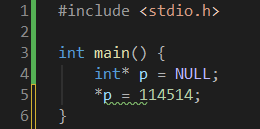
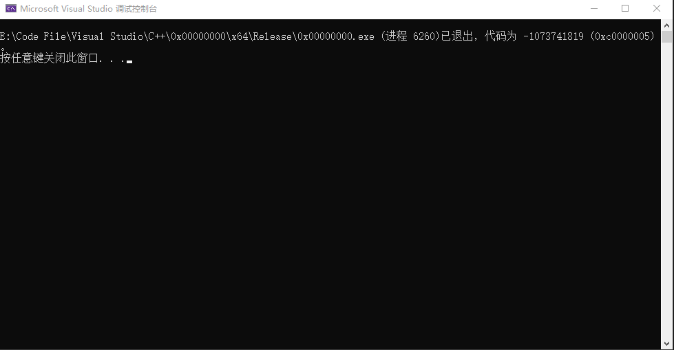
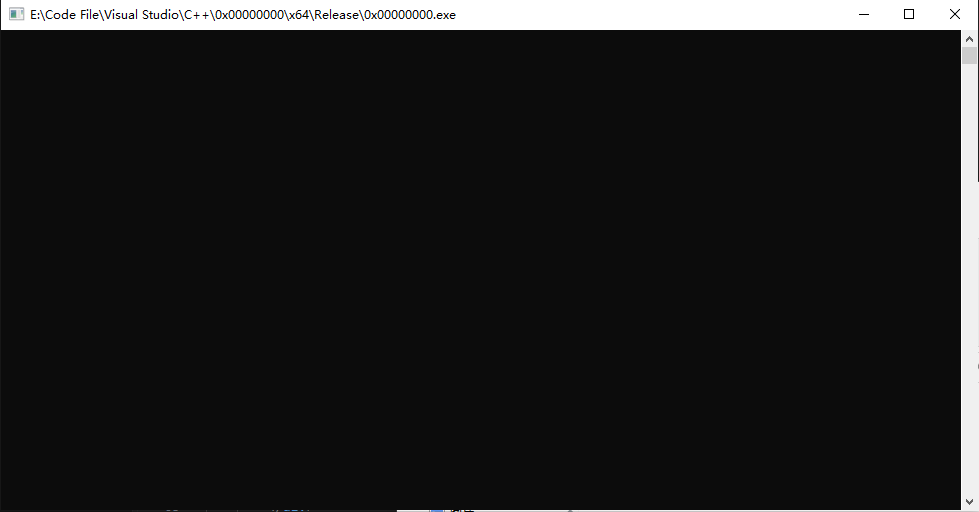
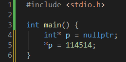

写简单C++能崩溃 - T-PageCode Blogs
你敢相信吗？写一个简单C++能让程序崩溃？
调用空指针内存
第一步：调用空指针内存（示例：int *p = NULL）
第二步：写入到空指针内存（示例：*p = 随便编个数字）
源代码
本实验使用Visual Studio运行（注意不是VS Code）

然后呢？你要是运行，Windows直接给你抛出来0xC0000005。
虽然这几乎和C语言一模一样，引入stdio.h、int main，但是我创建的其实是C++。
为什么会报错退出？
因为0x00000000（空指针）是Windows禁区。
你不能在这里写入、读取等操作。
为什么是Windows禁区？
因为Windows使用虚拟内存，CPU通过页表把虚拟地址映射到物理内存。
这听起来很正常，可是？
Windows把虚拟地址分成了两块，一个是用户模式和内核模式。
简单来讲：
用户模式就是应用程序能访问的地方。
内核模式就是只有Windows系统内核才能访问的地方。
Windows特意把虚拟地址0开始的64KB区域标记为不可访问。
（地址是0x00000000到0x0000FFFF）
如果允许呢？
如果允许，应用程序会静默修改内存，可能会破坏其他数据。
程序能正常运行，但是行为很诡异，Bug很难定位。
还可能会被恶意利用。
当然，Linux系统也会禁止程序访问空指针。
示范一下
编译器：Visual Studio Cpp调试控制台
软件：Visual Studio
项目类型：C++控制台应用
OK，不多说了，直接运行！

可以发现，没有任何报错弹窗，只有Visual Studio程序退出的提示，原因：
这是控制台模式，不是图形界面模式（GUI Mode），Windows不会报错。
如果是图形界面模式，那会看到：
0xXXXXXXXX指令引用的0x00000000内存，该内存不能为XXXX
（注意“X”是占位符，不是真实地址和命令）
如果不通过Visual Studio调试控制台运行
这里拿explorer.exe为例，这是Windows 10文件资源管理器。
0x00000000.exe就在这里，运行一下这个exe。

运行后没有文本输出也没有报错弹窗。
等了一会后，exe的窗口和进程全部消失。
应该是程序崩了，日志不好找，先不说日志。
提示
如果p是nullptr也会同样发生错误，这里给个示例：

运行也是一样的0xC0000005
0x00000000：114514，你肯定动不了我。